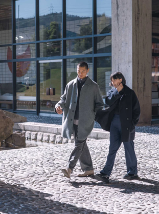
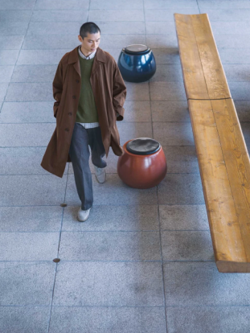

Kagawa: Timeless Modern
Gedung Timur Kantor Pemerintah Prefektur Kagawa
Design moguls such as Kenzo Tange, George Nakashima and Isamu Noguchi have an inseparable bond with Kagawa. With LifeWear's authentic clothing collection, let's explore timeless mid-century crafts and architecture.
Since its completion in 1958, this Kenzo Tange masterpiece has become a symbol of Kagawa. Masanori Kaneko, the governor who was in office when the building was designed, met Tange through an old friend, Genichiro Inokuma. In 2022, the building was designated an Important Cultural Property. Wakeiseijaku, the mosaic tiles were made by Inokuma, while the wood-covered lobby and dressing room chairs were made by Sakura Woodworkers. Even with all this fancy furniture, this cultural treasure is still often used as a daily gathering place.

Sweater Souffle Yarn Kerah Bulat Rp 399.000
Celana Lebar Brushed Jersey Rp 499.000
Jeans Lurus Potongan Lebar Rp 599.000
Kemeja Katun | Garis Rp 399.000
Celana Lebar Lipit Rp 499.000
Masatoshi Izumi bertemu dengan pemahat batu Isamu Noguchi pada tahun 1964, dan kemudian menjadi asistennya selama dua puluh lima tahun. Di tahun 1972, ia mendirikan Izumi-ya sebagai tempat tinggal pribadinya. Sekat-sekat indah shoji modern dan dinding-dinding batu besar meninggalkan kesan yang sangat kuat. Meski rumah Izumi tidak dibuka untuk publik, pahatan karyanya Mei dapat dilihat di luar kompleks perbelanjaan Tokyo Midtown Hibiya, sementara Shimatachi disimpan dalam koleksi permanen Art Institute of Chicago.
House of Masatoshi Izumi
Izumi-ya
Opened in 1962, this cafe became a gathering place for Kagawa artists such as Isamu Noguchi. It was designed by Tadashi Yamamoto, a Kagawa architect and student of Kenzo Tange. Inside, the stone walls feature relief carvings of prototypes made for the 1964 New York World's Fair as part of the Japan Pavilion (designed by Kunio Maekawa). To the side of the entrance are stone speaker cabinets, each made from three tons of “aji ishi” granite. The cafe tables are made by Sakura Woodworkers. A treasure trove of Japanese mid-century style.
Kemeja Drape Rp 499.000 (UNIQLO U)
Celana Drape Relax Rp 699.000 (UNIQLO U)
HEATTECH Ekstra Hangat T-Shirt Kerah Tinggi Rp 299.000 (UNIQLO :C)
AIRISM Katun Sweater Rp 599.000(UNIQLO U)
AIRISM Katun Celana Sweat Rp 599.000 (UNIQLO U)
Kemeja Katun | Garis Rp 399.000
Celana Lebar Lipit Rp 499.000
AIRism Katun Sweater Rp 599.000 (UNIQLO U)
AIRism Katun Celana Sweawt Rp 599.000 (UNIQLO U)
Sakura Woodworkers
Founded in 1948. His meeting with American furniture designer George Nakajima in 1964 earned him wider recognition. With just one workshop in Japan, these carvers systematically continued to create iconic designs such as the Conoid Chair. His works can be purchased at the exhibition hall, and there are more on display at the George Nakashima Memorial Gallery next door.
Kemeja Broadcloth | Lenga Panjang Kotak Rp 399.000
Celana Chino Fit Lebar (UNIQLO U) Rp 599.000
Mantel Panjang Chester Double Face Rp 1.490.000
Kemeja Katun Rp 399.000
Jaket Fleece Risleting Rp 399.000
Sweater Merino Kerah Bulat Rp 499.000
Blus Rayon Kerah Skipper | Lengan 3/4 Rp 399.000
Celana Lebar Lipit Rp 499.000
Sepatu Clog (UNIQLO :C) Rp 599.000
Kemeja Broadcloth | Lengan Panjang Kotak Rp 399.000
Celana Lebar Lipit | Houndstooth Rp 599.000
